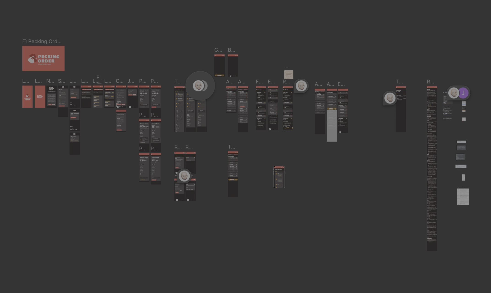
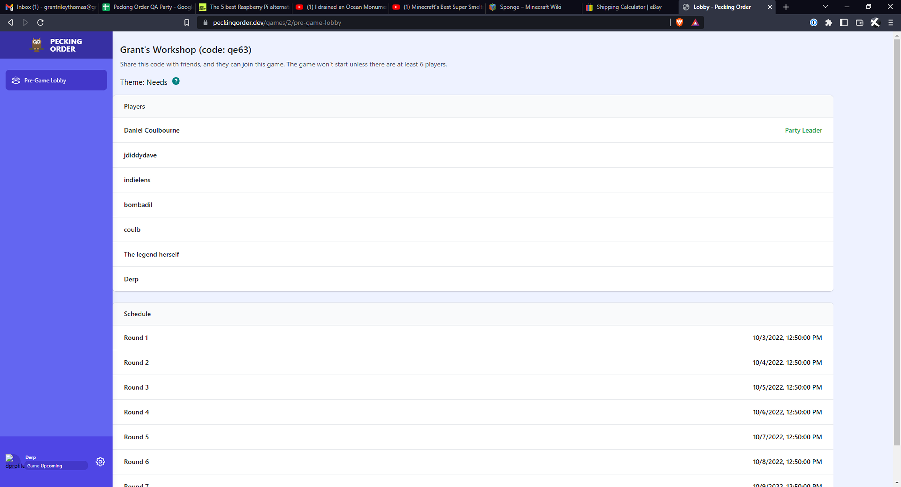
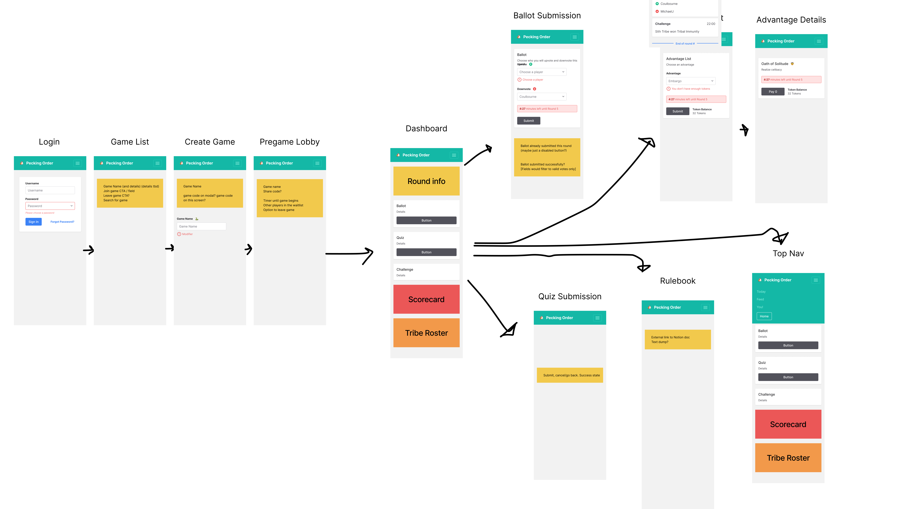
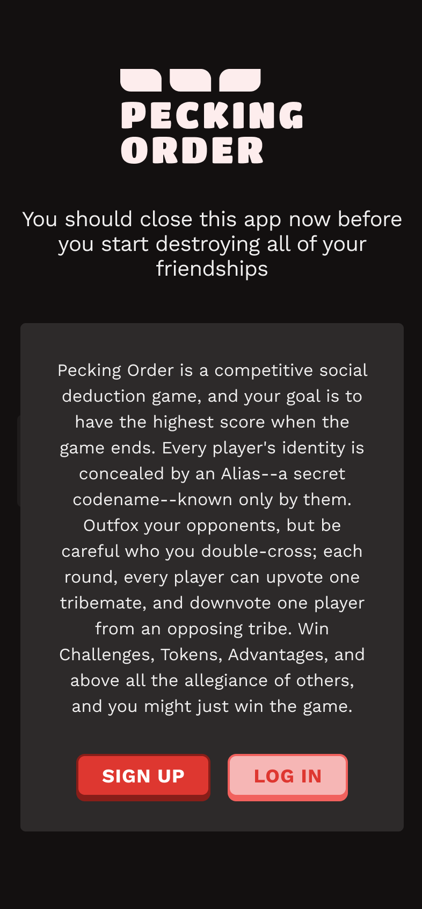
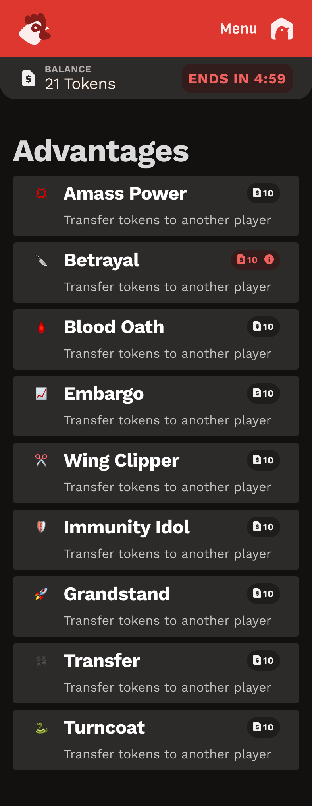
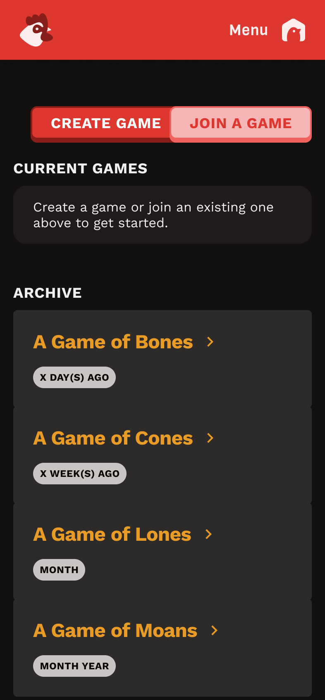
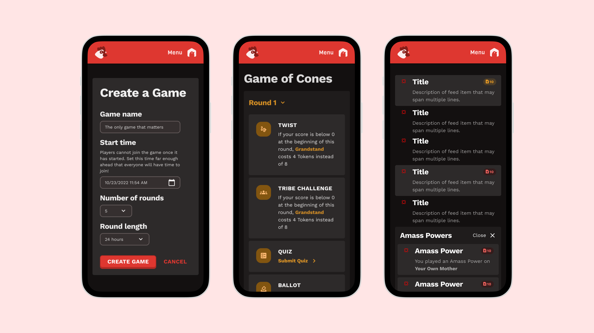
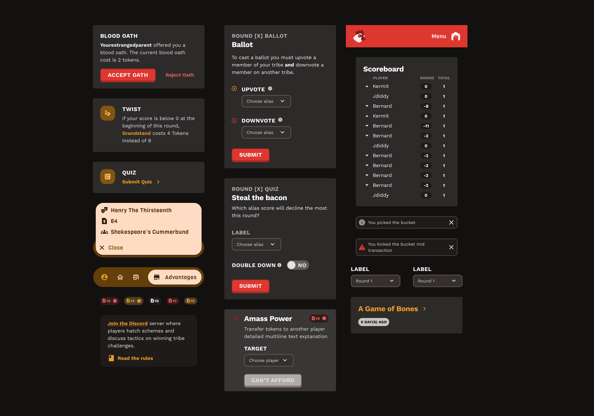

Game Design · UX Design · Product Development
From Spreadsheet to Social Experience: Designing a Week-Long Survivor Game
During COVID-19, a friend with a board game background recruited a small group of us to prototype a social game. I quickly moved from playtester to lead designer — owning the visual direction, UX architecture, and game systems design from early prototype through the final shipped mobile app.
What started as a Google Sheets experiment became a full Laravel web application. The gap we were filling: no digital game captured the week-long social dynamics, strategic depth, and relationship-building that make Survivor compelling.

Full project scope in Figma — login through end-game, across two platform generations
The pandemic created demand for meaningful social interaction, but existing games fell into two extremes: shallow party games that lasted minutes, or complex MMORPGs requiring massive time investments. Neither captured the week-long relationship arc that makes Survivor compelling.
The Gap: No games created the conditions for genuine social strategy over multiple days — the alliance formation, shifting loyalties, and relationship-building that create authentic human connection under pressure.
I analyzed what makes Survivor compelling at a systems level: social voting dynamics, resource management, alliance formation, and the balance between strategic gameplay and relationship maintenance. The game had to create conditions for those dynamics — not just simulate them.
The game operated on a consistent daily rhythm I designed to maintain engagement across the full week:
These elements created multiple strategic layers — players had to balance individual performance, social positioning, and team dynamics simultaneously.
Why we started here: Google Sheets offered the perfect rapid prototyping environment — real-time collaboration, built-in data structure, and zero development overhead.
The "Probst" System: One player served as game master, managing the master spreadsheet while others accessed individual sheets with 4-digit password protection.
Why we made the transition: Google Sheets became increasingly fragile as we added complex logic. A single typo could break the entire game mid-session.
Technical Solution: Migrated to Laravel web application with proper error handling, data validation, and robust architecture.

Early Laravel web build — the pre-game lobby before the full mobile redesign. Players joined via shareable game code and could see the full round schedule.
I designed the entire user experience from scratch — setting the visual direction through vision boarding before touching a single frame. The dark UI, the competitive tension in the color system, the typographic choices — that aesthetic was mine. From there I mapped every decision point in the app, from authentication through end-game.

Complete UX flow — Login → Game List → Pregame Lobby → Dashboard → Ballot, Quiz, Challenge, and Advantage submission screens
Design Philosophy: I kept external communication in Discord while focusing the app on core game mechanics — a deliberate separation between social strategy (Discord) and game actions (web app). This reduced interface complexity without sacrificing the social dynamics that made the game work.

Onboarding — tone-setting copy that primes players for competitive social gameplay

Game list — current active game plus archive of past seasons
The currency system created rich strategic depth through multiple spending options. Every advantage had to feel meaningfully different — not just reskinned versions of the same action.

Advantages screen — the full economic menu. Each action had distinct strategic value and a token cost balanced against weekly earning rates.
The economy had to balance power (expensive actions felt impactful) with accessibility (everyone could participate meaningfully). Early versions suffered from runaway leaders until we implemented diminishing returns on consecutive actions.
Meaningful Connection Through Mutual Need: Rather than forcing social features, the game design created natural interdependencies. Players needed alliances to succeed in challenges, votes to avoid elimination, and strategic cooperation to maximize their position. The challenges provided a "cradle for mutual need" that allowed authentic relationship building to emerge organically.
The most powerful validation of the social design was that two strangers met through the game and are now engaged to be married — demonstrating that the game mechanics successfully created conditions for genuine human connection.

Final mobile app — Create Game, live round dashboard, and the social feed showing active challenges and player activity

Core mechanics in action — Blood Oath alliance prompt, ballot submission with upvote/downvote, quiz challenge, live scoreboard, and tribal selection
Not every decision I pushed for made it into the final product — and that's worth being honest about, because the constraints themselves shaped the design.
The social feed of player actions could easily become overwhelming as the game scaled. I pushed for filters — by action type, by player, by round — so users could orient to what mattered without wading through noise.
The engineering team saw the value but didn't have the bandwidth to build it. Rather than ship a cluttered unfiltered experience, I simplified the information hierarchy instead — grouping actions by day and reducing feed item density so the stream stayed readable without filtering. The workaround worked. But I'd ship the filter first in a v2.
I advocated for clear visual day-breakers in the feed with persistent sticky headers as users scrolled. Week-long games generate a lot of events, and players needed to quickly understand where in the arc any given action sat.
This one shipped. It became one of the small but meaningful details that made the game feel polished — players could always answer "what day are we on?" with a glance.
The platform was adapted for John's product consulting company as a conference engagement tool. The underlying UX architecture I built was flexible enough to support that pivot without a redesign — which was the point of building systems rather than screens.
Challenge: Google Sheets couldn't handle increasingly complex features — a single typo could crash the entire game mid-session.
Solution: Migrated to Laravel web application with proper error handling, data validation, and robust architecture that could scale with feature complexity.
Challenge: The original voting economy created dramatic endgame swings that felt disconnected from week-long strategic play.
Solution: Simplified automatic vote mechanics and added diminishing returns to prevent dramatic last-minute position changes.